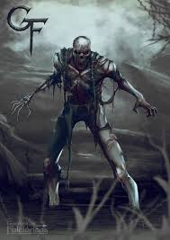

Corpo Seco
Sua Origem
O corpo-seco é um ser amaldiçoado, uma espécie de morto-vivo que está condenado a vagar pela Terra aterrorizando as pessoas. Ele é um cadáver que foi devolvido pela terra, que não o aceita por conta das maldades que realizou em vida. As maldades do defunto que se transforma em corpo-seco são tão grandes que nem Deus nem o diabo quiseram receber sua a alma.
Como a alma do defunto não foi aceita no céu e no inferno e a terra rejeitou devorar o corpo, o morto retorna ao plano dos vivos e, na condição de nem vivo nem morto, vai aterrorizar os viventes que passarem por ele. Como não é morto, o seu corpo não apodrece, mas, como não é vivo, também não é alimentado, portanto, o corpo-seco, literalmente, tem o corpo ressecado, com apenas os ossos e o couro.
Corpo-seco, ainda, tem unhas e cabelos enormes, pois não param de crescer jamais. Essa característica fez com que ele ficasse conhecido também como Unhudo em algumas regiões
Por que o corpo-seco foi amaldiçoado?
O corpo-seco foi amaldiçoado por conta das maldades que cometeu em vida. A lenda tradicional conta que ele torturou e assassinou a própria mãe. Entretanto, variações regionais da narrativa apontam que corpo-seco foi um homem conhecido por cometer inúmeras maldades contra familiares e desconhecidos. Outras variações apontam-no como aquele que fez uma promessa para Deus e não a cumpriu.
O que o corpo-seco faz?
corpo-seco é um ser amaldiçoado, mas sua única ação, segundo as lendas, é aterrorizar aqueles que o enxergam. Uma variação da lenda relaciona-o com o bradador, outra narrativa folclórica sobre uma alma penada que vaga pelas madrugadas invadindo propriedades de pessoas e emitindo sons assustadores. Assim, o corpo-seco seria a morada física do bradador, a alma penada. Segundo o antropólogo e folclorista Luís da Câmara Cascudo, essa convergência das duas lendas é presente no estado do Paraná.